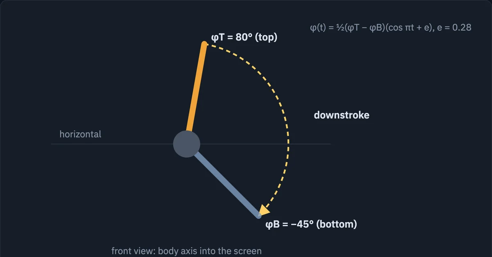
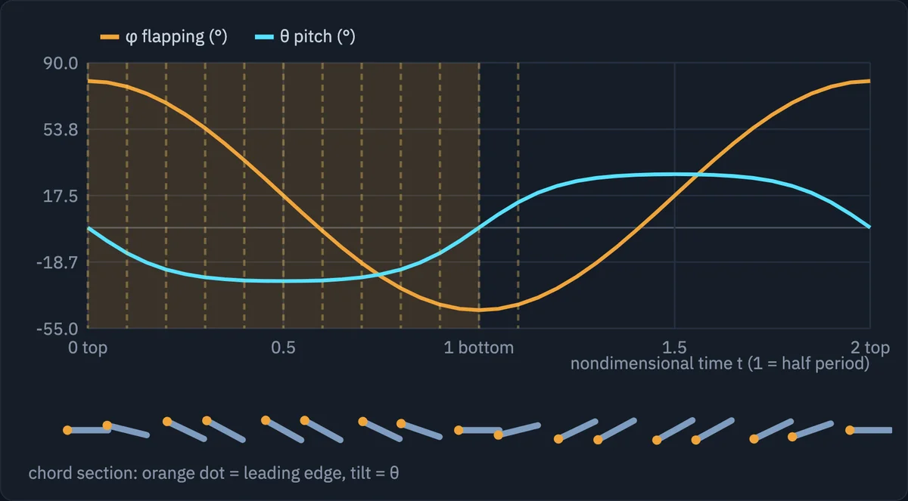
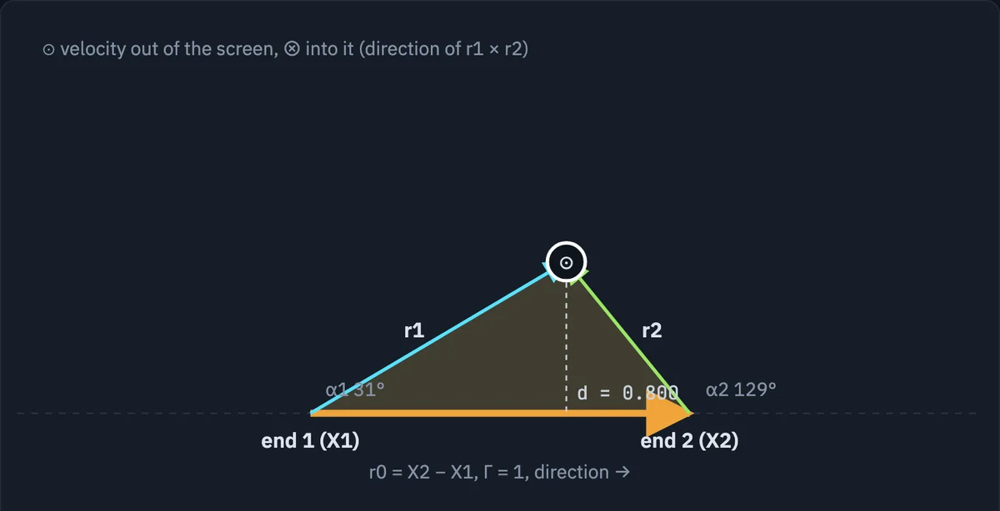
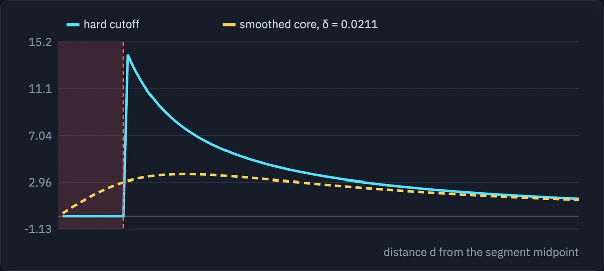
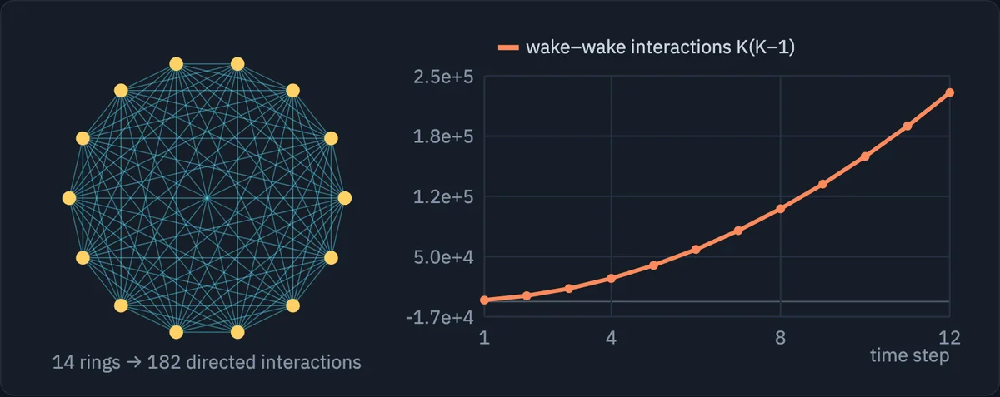

Pictures I made to understand something, kept because they might help the next
person. None of them is a research result; the results are on the
research and project pages.
Interactive: inside a vortex-panel flapping-wing simulation. Forty-two
diagrams from one run of four wings over twelve time steps, in five groups (geometry,
kinematics, wake, solving, velocity). The wake builds up as you play or scrub it, and
the 3D views rotate.
Before changing a panel code I drew what each block of it computes, one picture per
block. These are the ones that hold up without the code next to them.

Stroke angle. Seen from the front with the body axis into the
screen, the wing sweeps from φT = 80° to
φB = −45° on the downstroke and back on the
upstroke, following φ(t) = ½(φT − φB)(cos πt + e).

Flapping and pitch over one period. Flapping is smooth, close to
a cosine; pitch is a smoothed step that flips sign quickly at the top and bottom of
the stroke. The chord sections underneath show the same thing as a wing would: the
leading edge (orange dot) leads in both directions.

Velocity induced by one straight vortex segment. Every panel edge
and every wake ring is built from these. The speed at the point is
Γ/(4πd)(cos α1 − cos α2),
directed along r1 × r2; the code computes the
same number from cross and dot products without any angles. Derivation:
Biot–Savart from scratch.

Why the near field needs care. The segment formula grows like
1/d as a point approaches the line. A hard cutoff sets the velocity to zero inside
a thin band and leaves a tall spike just outside it; a smoothed core brings the
speed to zero gradually and agrees with the exact formula a few core radii away.

Why a fast summation is needed. Each wake ring feels every other
ring, so K rings cost K(K−1) interactions. In this run the wake gains 40 rings
a step; after twelve steps it holds 480 rings and 229,920 ring pairs, and the cost
keeps growing with the square of the step count. This is the cost the
multipole method removes.
Aircraft spin aerodynamics · interactive lesson
Why predicting a spin needs a rotary-balance wind-tunnel test and not only the usual
static derivatives, built up in 21 steps. Each step is a tab with its own 3D scene of
one model jet that you can orbit and play, and beside it the step’s definitions,
equations, units check and a worked number; the later steps derive the local angle of
attack along the span and the strip-theory roll damping
Clp = −CLα/6.
I wrote it in Turkish while teaching myself flight dynamics and rebuilt it here in
English; the force curves in it are qualitative models that carry the argument, not
data for a real aircraft.
Step 14: the rotary-balance rig, with p = Ω cos α and r = Ω sin α on the model. Context: Bihrle and Barnhart, Spin Prediction Techniques, AIAA Paper 80-1564, later in the Journal of Aircraft.